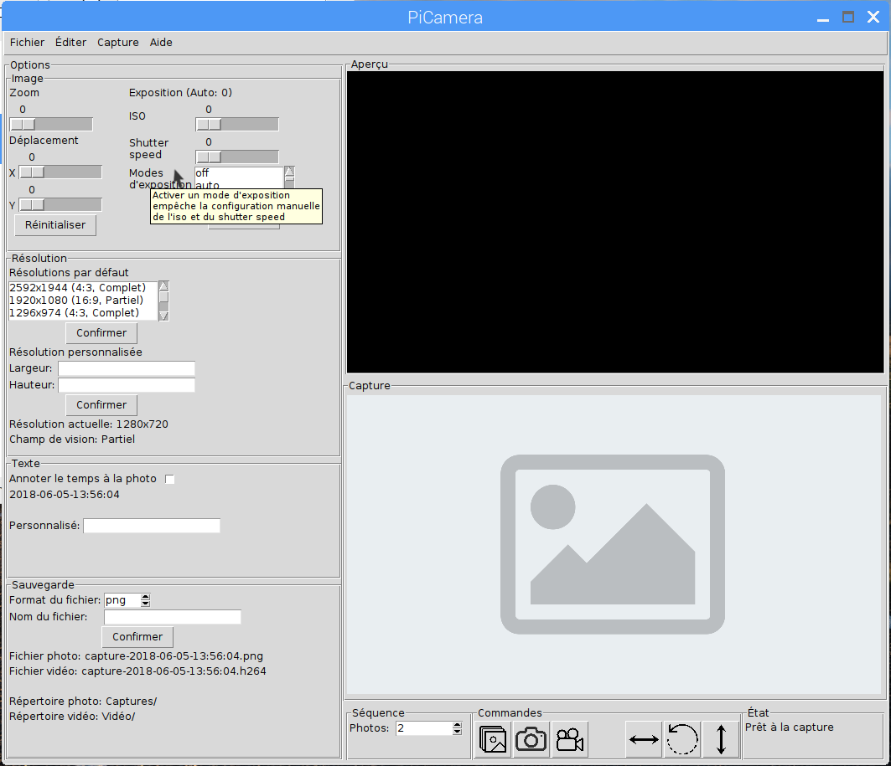

Notes sur le code¶
Voici un résumé de ce que fait le code. La plupart des commentaires sont déjà présents dans les fichiers, n’hésitez pas à les consulter au besoin.
Main.py¶
En premier lieu, le programme essaie de détecter s’il y a des problèmes d’initialisation. D’abord, il détecte si Python peut bel et bien initialiser la fenêtre et, ensuite, si il peut initialiser l’objet PiCamera. S’il ne peut pas, il lèves deux types d’erreurs et propose des solutions exposées exceptionsmodules:ici.
L’instance app de la classe gui:PiCameraGUI est crée avec win comme root et camera comme objet PiCamera. Le programme exécute ensuite la ligne:
win.mainloop()
Essentiellement, il s’agit d’une boucle infinie dans laquelle la fenêtre réagit aux divers événements (cliques, touches, déplacements de la souris, etc.). Pour mieux comprendre la fonction mainloop() de Tkinter, consulter le sujet suivant sur Stack Overflow. Techniquement, le programme n’est pas supposé quitter la boucle mainloop, mais si c’est le cas, il se doit d’effacer l’instance camera pour éviter les problèmes de mémoire.
PiCameraGUI.py¶
Ce fichier contient la classe PiCameraGUI qui s’occupe de la création de l’interface ainsi que des fonctionnalités du programme.
Disposition de l’interface¶
Si vous devez ajouter, modifier ou supprimer des fonctionnalités, vous devrez connaitre la disposition des objets dans la fenêtre. Voici la disposition générale du logiciel. Celle-ci contient les widgets qui servent à l’organisation et à la disposition des boutons.
La disposition suivante contient plutôt les boutons. Si vous devez modifier des fonctionnalités, cherchez ici.